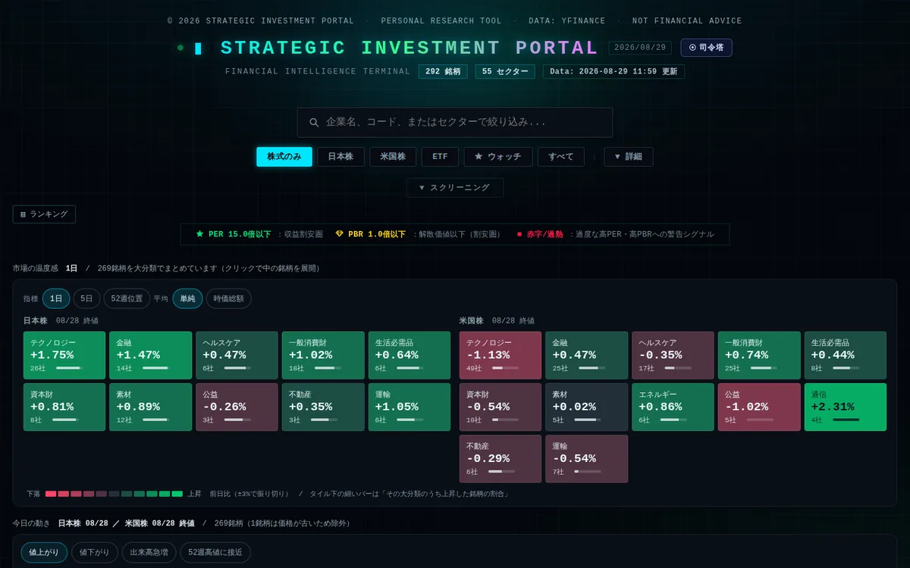
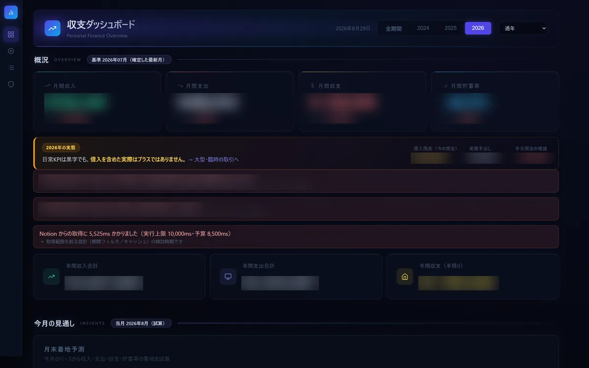
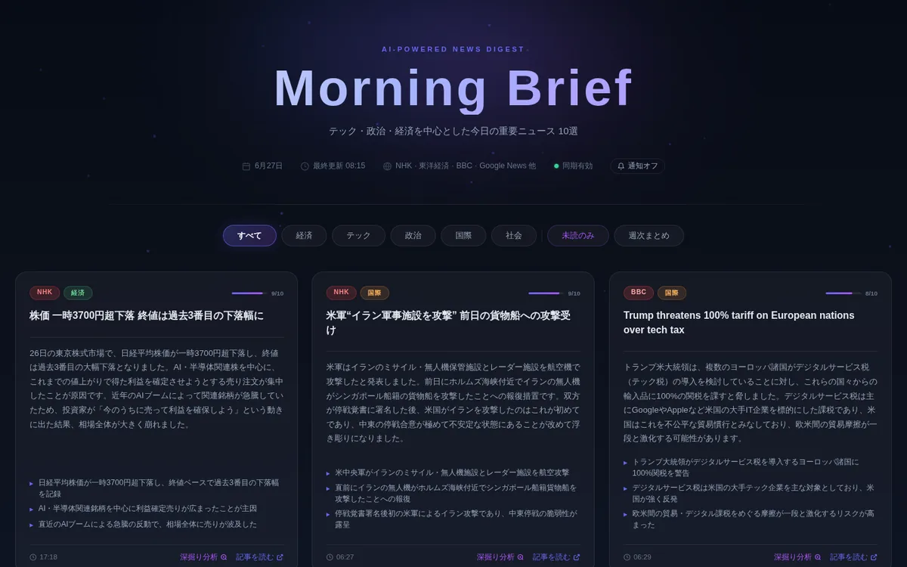
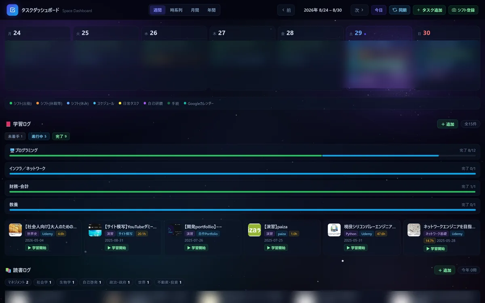
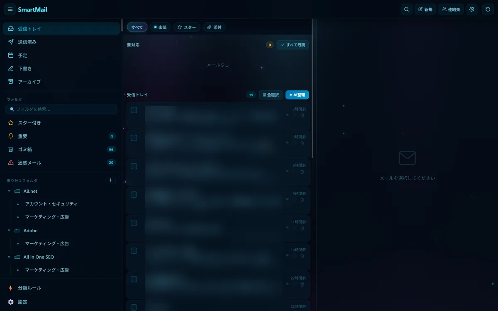
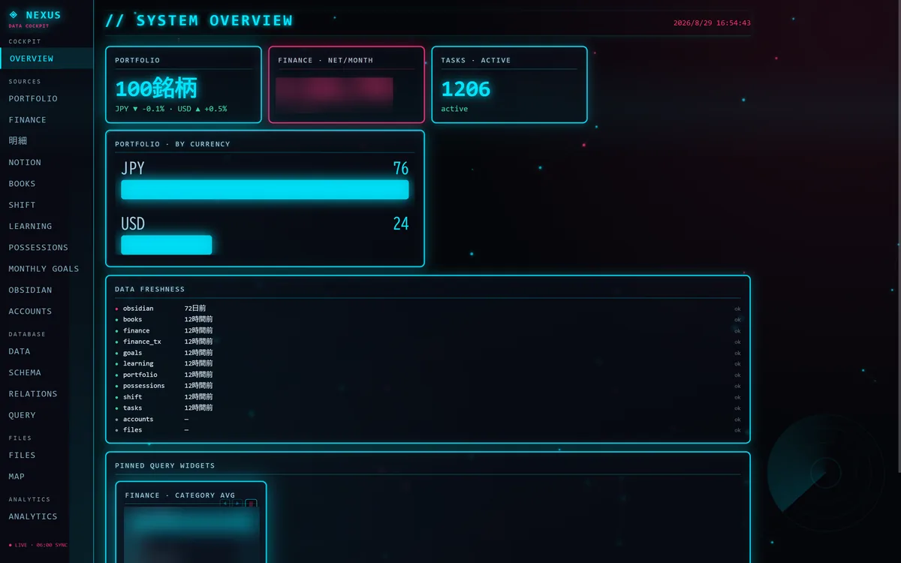
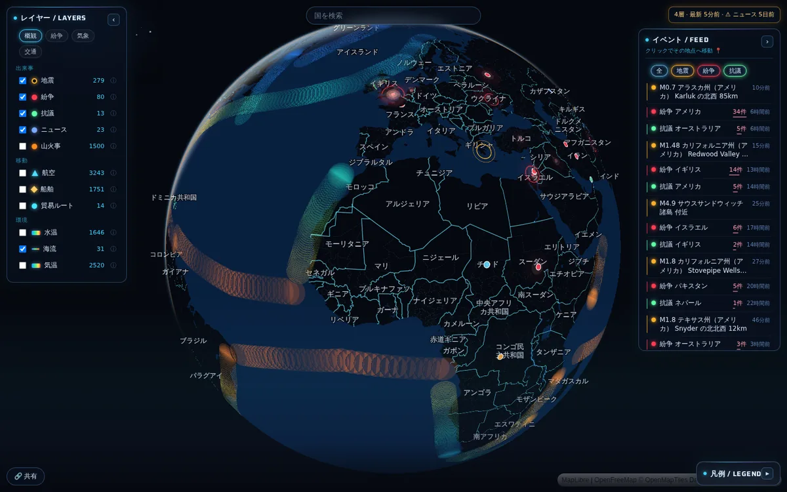
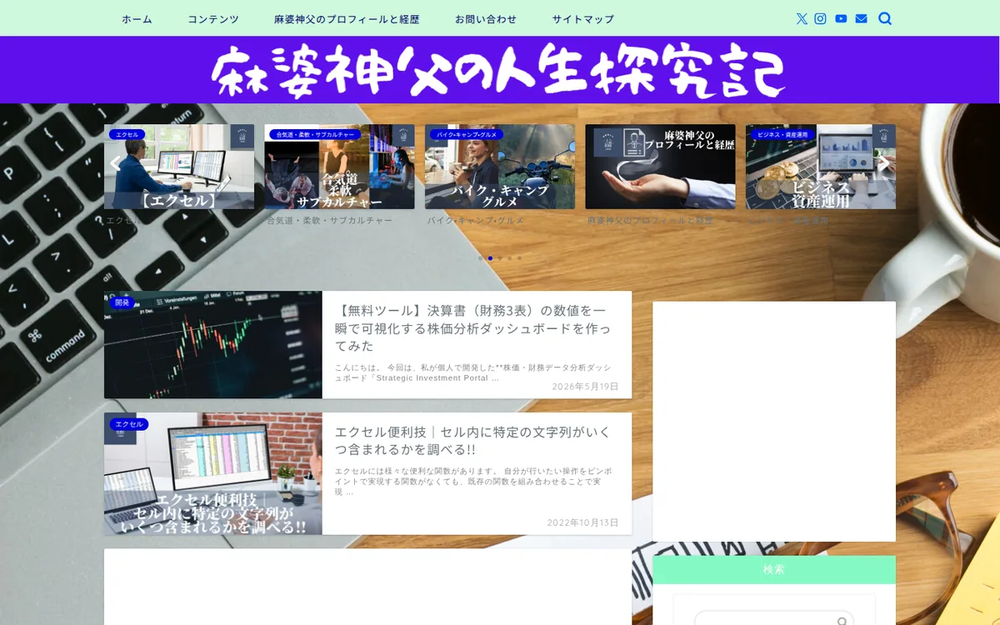
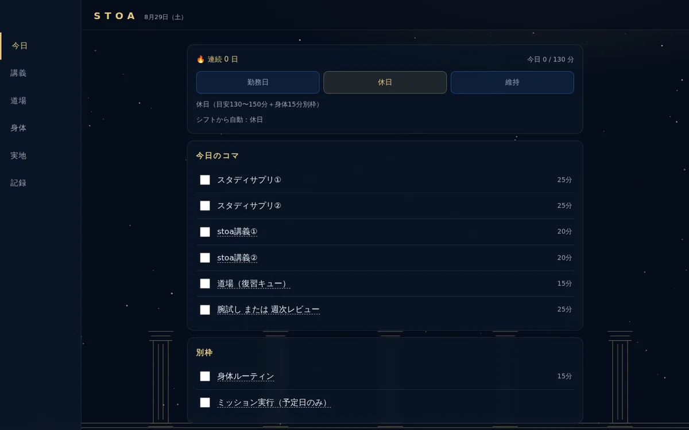

01
Strategic Investment Portal

日米の株式・ETF 84銘柄を分析する投資ダッシュボード。「お金の司令室」を統合しています。
自慢できる点21MBの静的データを Neon Postgres と遅延ハイドレートに置き換え、初回ロードを 21MB から 84KB に削減しました。投資助言まわりは公開クライアントを決定論的な教育表示に限り、助言は本人専用サーバ側に隔離する2層構成で規制安全を担保しています。
02
収支ダッシュボード（kakeibo）

Notion を台帳に使う個人向けの収支管理。13種のインタラクティブチャートで支出を追います。
自慢できる点公開リリースを前提に監査を自分で107件洗い出し、P0止血、API堅牢性、フロント安全化、セキュリティヘッダー配信（CSP / X-Content-Type-Options / X-Frame-Options / Referrer-Policy / Permissions-Policy / COOP）まで段階的に本番投入しました。テストは pytest 145 と e2e 18。
03
Morning Brief（news-digest）

毎朝137記事を RSS で収集し、Claude で要約して上位10件を配信するニュース PWA。
自慢できる点収集と要約を GitHub Actions の cron に寄せ、配信側はサーバー処理を持たない構成にしました。以降のアプリで使っている濃紺ダークのデザイン言語は、このアプリで決まったものです。
04
task-dashboard

Notion（タスク / 学習 / 読書 / シフト）と Google Calendar を統合した管理ダッシュボード。
自慢できる点シフトが二重生成されるバグの根因を3段の連鎖まで特定しました。6観点26エージェントの敵対的レビューと、本番の読み取り専用診断の両輪で残存0件を確認してからクローズしています。
05
smart-mail

Gmail API を AI支援（返信下書き、連絡先抽出、カレンダー連携）付きで使うメールクライアント PWA。
自慢できる点task-dashboard と OAuth クライアントが1つの GCP プロジェクトに同居していたために起きる invalid_grant 失効バグを、GCP プロジェクト分離で恒久解決しました。デザイン「C1 Deep Aquarium」は複数案をブラウザで実物比較して選んでいます。
06
nexus

7ソースのデータを1か所に集約する、暗号化された中間DB兼サイバーパンク調ダッシュボード（12ページ）。
自慢できる点ブラウザ内の AES-GCM 復号（PBKDF2 鍵導出）と、transformers.js によるブラウザ内の意味検索を自前で実装しました。サーバに平文を置かないまま全文検索ができます。
07
orbis

無料の OSINT だけで世界を近リアルタイムに監視する3D地球儀ダッシュボード。11のデータレイヤー、AI合成インテリジェンス3本、全11,600地域のドリルダウン。
自慢できる点月額0円で運用が回る設計です。収集は GitHub Actions の cron、配信は静的 JSON、描画はクライアント補間の3層に分け、Vercel のサーバーレス関数を1本も使っていません。テストは node 643 と pytest 423 が全緑。
08
hortus
庭・芝生・植栽の手入れを、カメラと天気と Notion タスクで支援する PWA。
自慢できる点Plant.id（種同定）と Claude（助言）を組み合わせたハイブリッドAIエンジン。写真スキャンから候補確認、承認、登録までのフローを設計しました。
09
live-translate ローカル稼働
再生中のタブの音声から日本語字幕をリアルタイム生成する、完全ローカル動作の翻訳エンジン。
自慢できる点cross-origin の YouTube iframe から音声を取れないという動かせない制約を、getDisplayMedia のタブ音声共有で迂回しました。APIキー不要で100%ローカルで動きます。orbis のニュース字幕としても結線しています。
10
旧ブログの静的化移設

休眠していた WordPress ブログを静的化し、XServer から Vercel へ移設。記事、URL、AdSense、SEO、SNSリンクを全保全しました。
自慢できる点年間およそ11,500円のコストを削減しています。ドメインの利用期限は XServer の管理画面ではなく Verisign の RDAP から直接引いて一次情報で確定させました（管理画面は特典適用中に期限を表示しません）。
11
stoa

心理的自立の鍛錬を目的にした自分専用の学習プラットフォーム（哲学、教養、身体、実地の4トラック）。
自慢できる点SM-2 系の復習キュー（SRS）を自前で実装しました。認証なしの公開URLでもプライバシーが漏れないよう、Notion のシフトは生データを配信せず、判定済みのモードだけを配信する設計にしています。